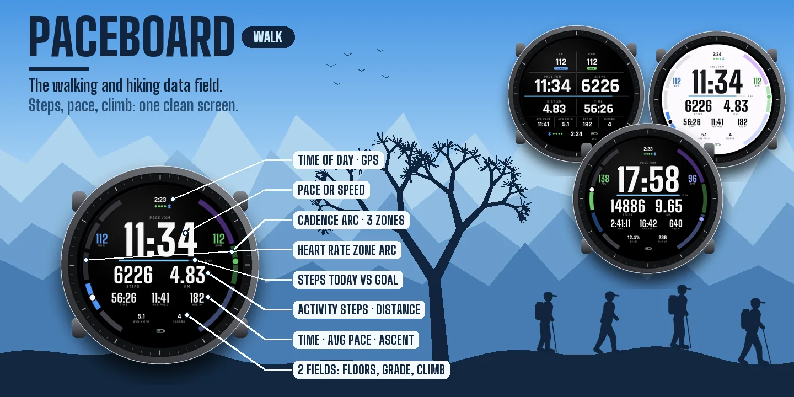
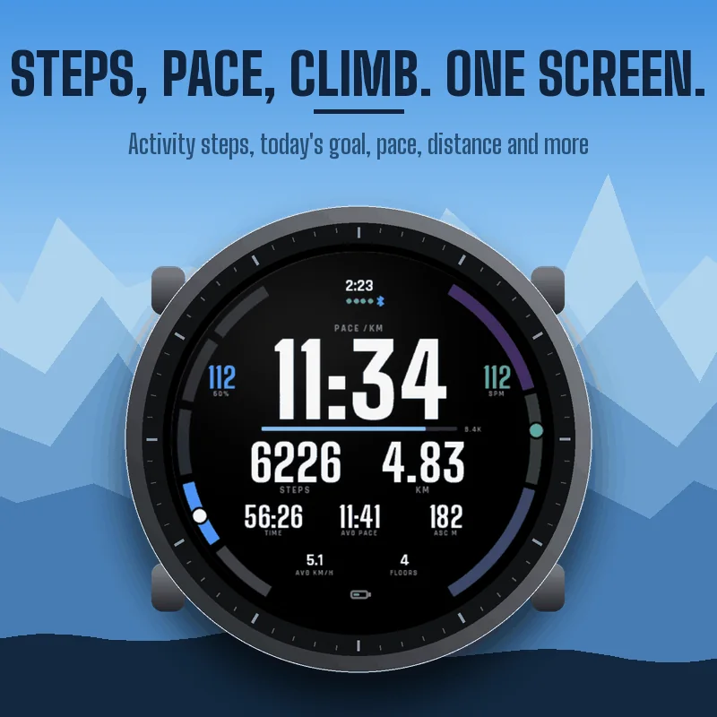
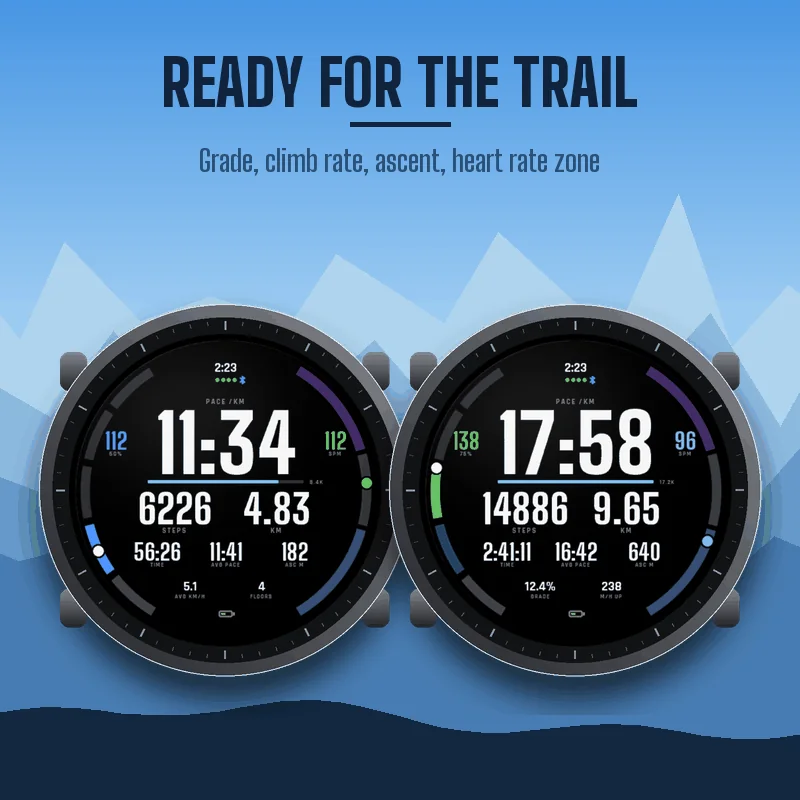
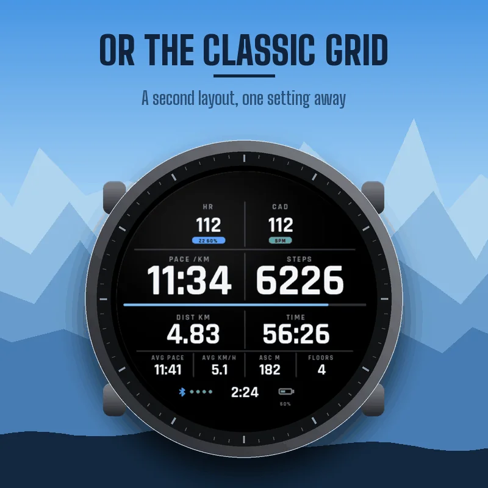
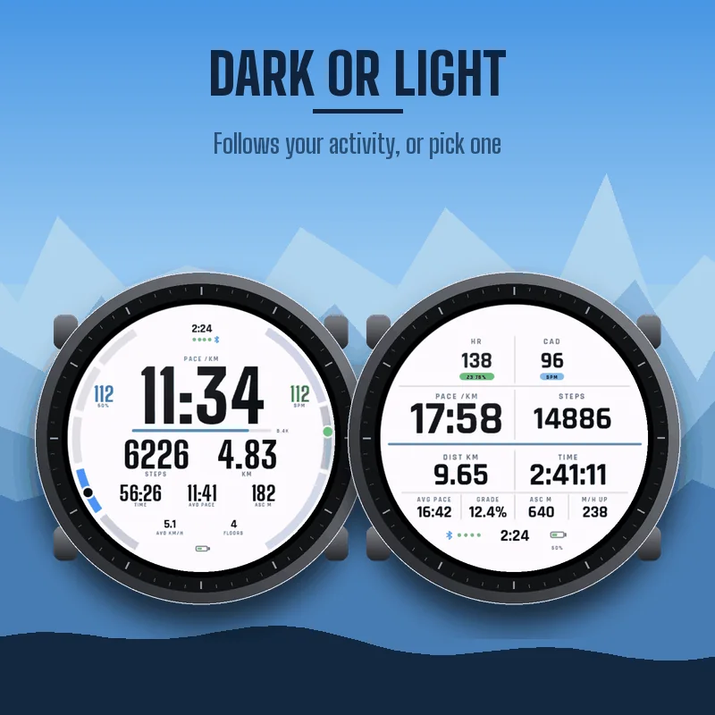
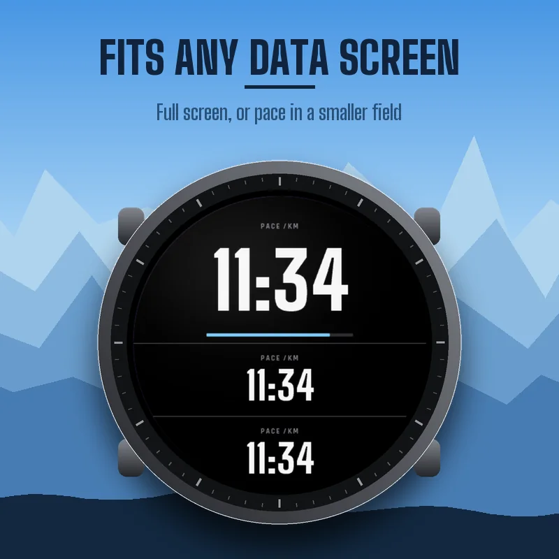

TibereJ › Data fields › PACEBOARD WALK
Data field for Garmin watches
PACEBOARD WALK
Walking and Hiking Data Field







How to add it to your walk
PACEBOARD WALK is a data field: it lives inside the Walk or Hike activity of your watch. Press START, choose Walk (or Hike), hold UP (or open the menu), go to the activity settings, Data Screens, add or edit a screen, set the layout to 1 field, select the field, open Connect IQ fields, and select PACEBOARD WALK. Menu names can differ slightly between watches. If the field does not show up right after installing, restart once.
Steps, pace, climb on one screen
Pace (or speed), steps during the activity, distance, timer, average pace, total ascent, heart rate with zone and percent of max, cadence, two fields of your choice, time of day, GPS signal, phone connection and battery. A bar under the pace fills up with your steps of the day toward the step goal of your watch.
Steps that add up
Activity steps only count while the timer runs, and they are not lost when you pause.
Ready for the trail
Choose grade, climb rate (meters or feet per hour over the last five minutes), floors climbed, stride length or steps today for the two bottom fields. Every number shrinks to fit when it gets longer.
Your zones at the edge
In the Halo layout, the left edge shows your heart rate zone and the right edge your cadence in three zones you can set (easy below 100, brisk 100 to 120, fast above 120 steps per minute by default).
Two layouts, dark or light
Halo (rings at the edge, huge pace) or Classic (a clean grid). Dark, light, or the same background as your activity.
Settings
On your phone: Garmin Connect, your device, Activities and Apps, Data Fields, PACEBOARD WALK, Settings. On the watch, the Connect IQ field has its own settings menu.
- Layout, background, big number (pace or speed), smoothing.
- Cadence zones. Heart rate zones: Garmin profile, or percent of a max heart rate you enter.
- Bottom fields: average speed, floors climbed, grade, climb rate, stride length, average stride length, steps today, calories, altitude, average heart rate, average cadence, energy expenditure, temperature, descent.
- Garmin Connect graphs: on or off.
Graphs in Garmin Connect
Energy expenditure and grade charts are saved with your activity, and your activity steps go into the summary. Turn graphs off if another site does not accept them.
Good to know
Units follow your watch settings. Floors climbed are shown on watches that count floors; others show --. Temperature comes from the watch sensor and reads warmer on the wrist. If a sensor has no value, the field shows -- rather than a made-up number.
The paceboard family
PACEBOARD RUN for your runs, PACEBOARD RIDE for your rides, on watches and Edge.